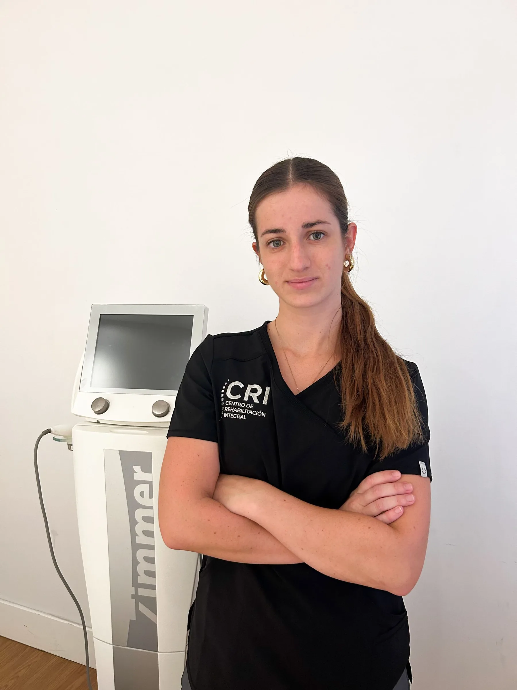
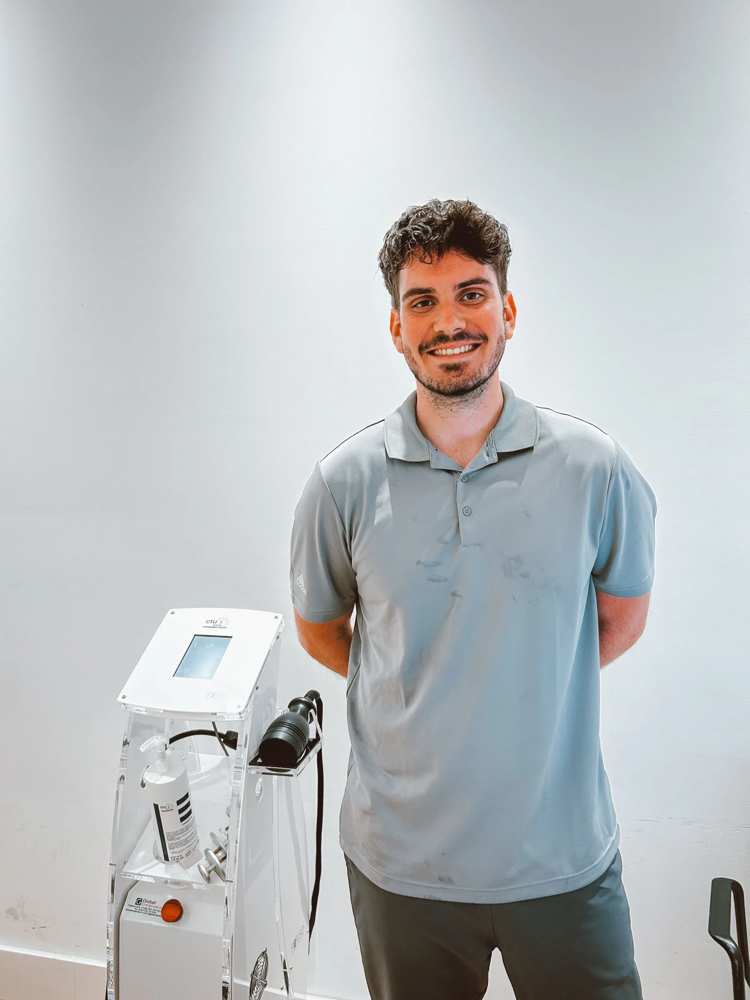
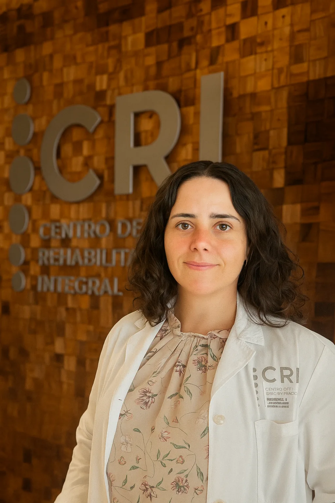
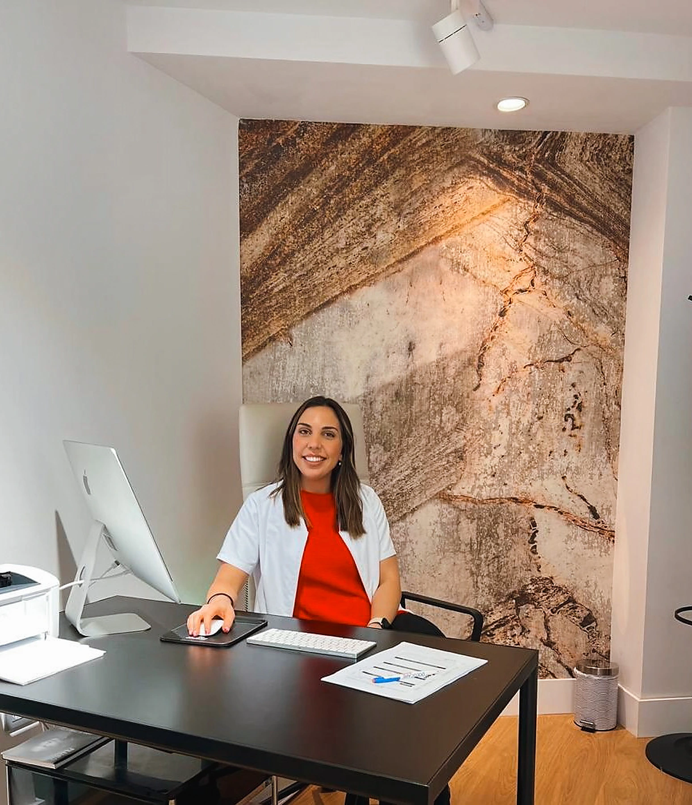
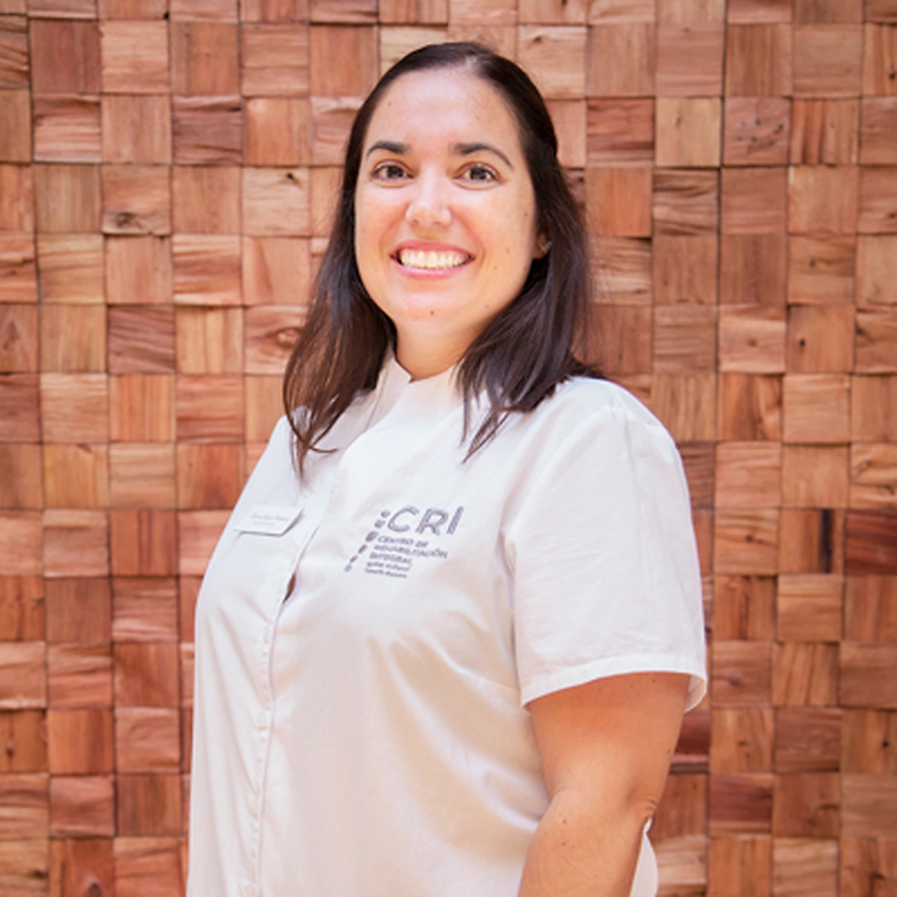

María Pardo
Fisioterapia traumatológica, suelo pélvico y fisioterapia invasiva.
Un equipo multidisciplinar que comparte información y objetivos para ofrecer una atención más clara, cercana y eficaz.

Cada caso empieza con una escucha activa y una valoración completa. A partir de ahí, conectamos fisioterapia, medicina y tecnología para construir un plan coherente.
Decisiones basadas en valoración, evidencia y seguimiento.
Profesionales coordinados alrededor de un mismo objetivo.
Explicaciones comprensibles y acompañamiento durante el proceso.
La composición del equipo puede evolucionar. Esta propuesta presenta las áreas y profesionales visibles en la web de referencia.

Fisioterapia traumatológica, suelo pélvico y fisioterapia invasiva.

Fisioterapia invasiva, ecografía y readaptación deportiva.

Neurocirugía.

Enfermería.

Administración y atención al paciente.
Terapia manual, ejercicio terapéutico, readaptación, fisioterapia invasiva, neurología y suelo pélvico.
Traumatología, rehabilitación, reumatología, neurocirugía, medicina regenerativa y unidad del dolor.
Coordinación de citas, orientación y acompañamiento para que el proceso sea sencillo desde el primer contacto.
Te orientamos hacia la especialidad y el profesional más adecuados para tu caso.